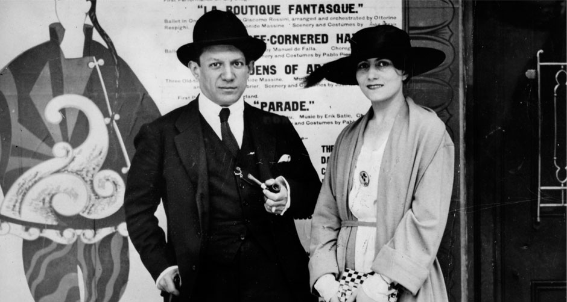

The mix between high fashion and art has always been something that has been percieved as a problematic idea. Even though they are in hte same social worlds and they are alike in many different ways it is not very clear whether they really mix. On this page one can see examples where fashion and art meet together and what inspired designers to draw inspiration from these well known artists, one can also find links to sites where designers are expressing their own art through the pieces which they create.